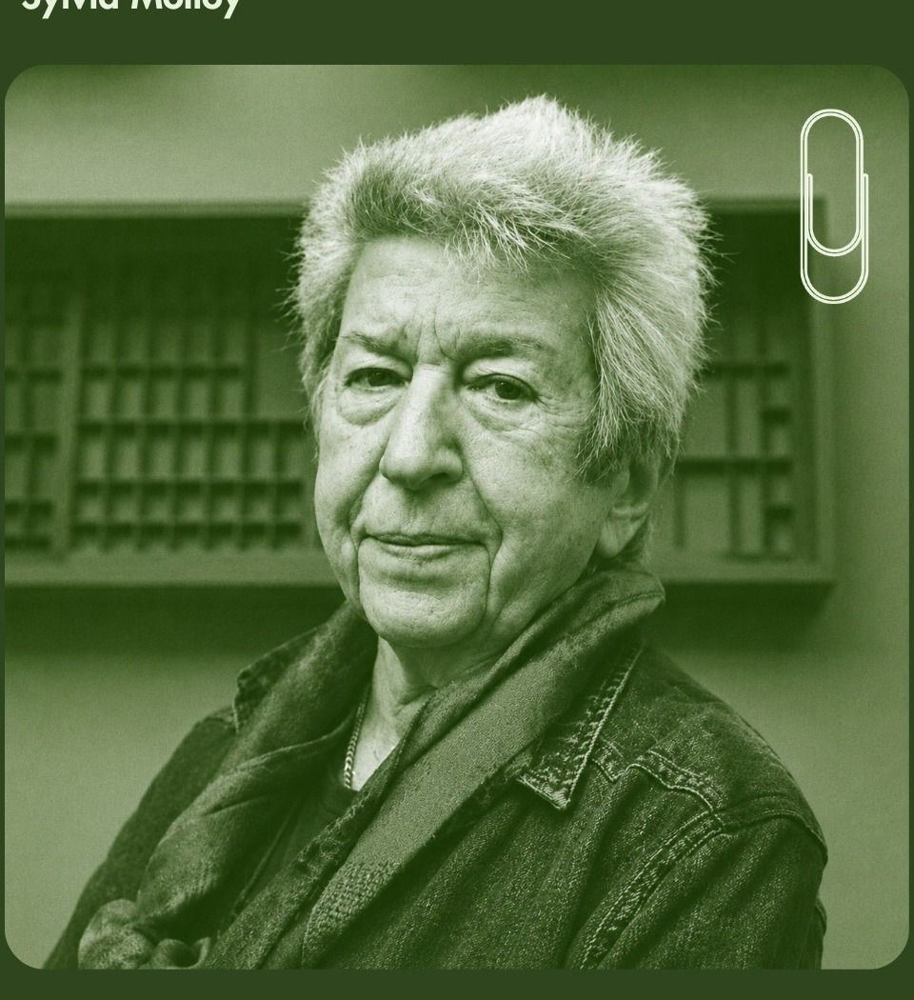

02

Sylvia Molloy
Episódio no Spotify
Escritora, ensaísta e crítica literária nascida na Argentina. Em Desarticulações, utiliza recortes de memória e fragmentos para narrar as visitas à sua ex-companheira que perde a memória devido ao Alzheimer.
Escute o episódio completo